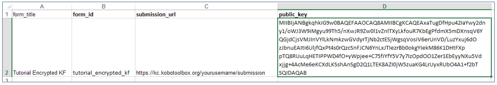
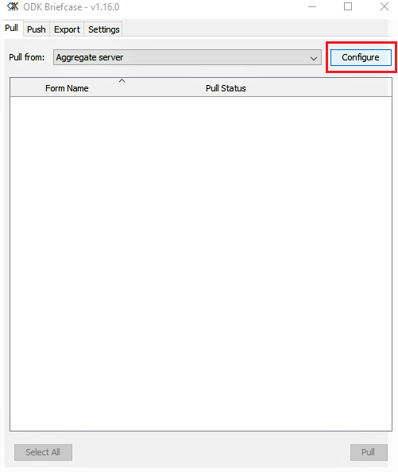
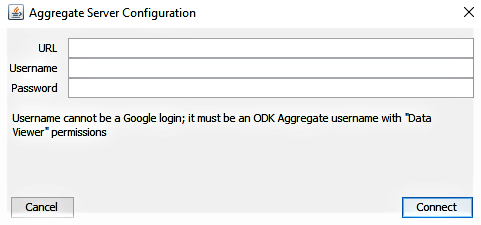
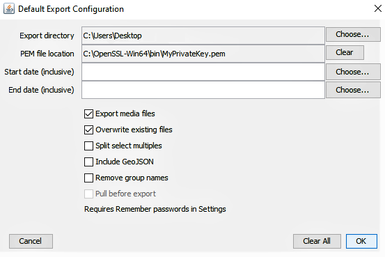
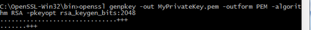

Search the knowledge base, browse our resources, and visit our forum for more detailed information
Read in English | Leer en español | اقرأ باللغة العربية Dernière mise à jour : 4 nov. 2024
Cette procédure est assez technique et s’adresse aux utilisatrices et utilisateurs qui sont à l’aise avec des instructions techniques avancées et nécessite une attention stricte aux détails.
Les formulaires chiffrés fonctionnent en chiffrant les données sur le téléphone au moment où elles sont enregistrées. Les données envoyées à KoboToolbox sont chiffrées et complètement inaccessibles à toute personne ne possédant pas la clé privée. Dans ce cas, KoboToolbox sert simplement de casier de stockage pour vos fichiers chiffrés - un endroit où importer puis télécharger plus tard pour un déchiffrement local (en utilisant ODK Briefcase). Étant donné que les soumissions de formulaires sont chiffrées, cela signifie cependant que tout ce qui nécessite un accès aux données comme la vue cartographique ou l’export de données ne fonctionnera pas dans KoboToolbox. Le niveau de sécurité supplémentaire rend possible l’utilisation de KoboToolbox pour collecter des données sensibles tout en respectant certains protocoles de protection des données.
Créez votre formulaire dans KoboToolbox comme d’habitude. Téléchargez le formulaire depuis la liste des brouillons sous forme de fichier XLS.
Dans le fichier téléchargé, allez dans la feuille « settings ».
Ajoutez une colonne submission_url et tapez
https://kc.kobotoolbox.org/submission ou
https://kc-eu.kobotoolbox.org/submission (selon
le serveur que vous utilisez).
Ajoutez une autre colonne public_key (c’est-à-dire base64RsaPublicKey). Collez votre clé publique compatible.
(Veuillez consulter l’image ci-dessous pour référence)

Importez le fichier XLS dans KoboToolbox. Vous pouvez soit l’importer dans la liste des brouillons de formulaires puis le déployer en tant que nouveau projet d’enquête, soit l’importer directement dans votre liste de projets déployés. Une fois déployé, vous devriez voir une étiquette avec le texte « encrypted » à côté du nom de votre formulaire.
Veuillez noter que l'URL pour une utilisatrice ou un utilisateur authentifié n'inclut plus **yourusername** suite aux récentes mises à jour.
ODK Briefcase est utilisé pour télécharger les fichiers chiffrés depuis KoboToolbox et les déchiffrer localement sur votre ordinateur à l’aide d’une clé privée garantissant un accès unique aux données. Pour que le déchiffrement réussisse avec ODK Briefcase, assurez-vous de télécharger et d’installer le Java Cryptography Extension (JCE) Unlimited Strength Jurisdiction Policy Files 6 depuis le site de téléchargement Java. Ceci est requis pour que le déchiffrement réussisse.
Décompressez l’archive zip téléchargée
Naviguez dans l’arborescence du répertoire extrait et copiez les fichiers local_policy.jar et US_export_policy.jar dans le répertoire lib\security
Collez ces fichiers dans le répertoire d’installation de l’environnement d’exécution Java (JRE) de votre ordinateur, en remplaçant les versions antérieures de ces fichiers.
Sur Windows, le JRE est généralement installé ici : C:\Program Files\Java\jre7\lib\security
Sur OSX, l’emplacement est /Library/Internet Plug-Ins/JavaAppletPlugin.plugin/Contents/Home/lib/security
Téléchargez et ouvrez ODK Briefcase.
Spécifiez un Storage Location sous l’onglet Settings.
Ouvrez l’onglet Pull et cliquez sur Configure.

Ensuite, saisissez les informations suivantes :
https://kc.kobotoolbox.org OU
https://kc-eu.kobotoolbox.org (selon le
serveur que vous utilisez)
Votre nom d’utilisateur
Votre mot de passe
Appuyez sur Connect lorsque vous avez terminé

Veuillez noter que les URL de serveur ci-dessus n'ont plus besoin d'inclure **yourusername** suite aux récentes mises à jour.
Une liste de projets s’affiche. Sélectionnez un projet que vous souhaitez récupérer et appuyez sur Pull. Vous recevrez un message Success sous Pull Status.
Allez maintenant dans l’onglet Export.
Appuyez sur Edit Default Configuration pour vous assurer que vous avez la PEM
private key à l’emplacement PEM file location.

Si elle n’y est pas, sélectionnez la PEM private key dans le dossier que vous aviez
sécurisé. (Remarque : Vous verrez également tous les projets ici qui ont été
récupérés avec succès.)
Maintenant, cochez le projet que vous souhaitez exporter et appuyez sur Export.
Les données sont exportées sous forme de fichier CSV, vous pouvez maintenant visualiser les données déchiffrées.
Pour générer les paires de clés publique-privée RSA, vous pouvez utiliser le logiciel OpenSSL, qui est préinstallé sur OSX et Linux. Sur Windows, vous devez télécharger et installer le logiciel OpenSSL depuis ce site. (Remarque : installez le Win64 OpenSSL v1.1.1c dans C: plutôt que l’emplacement par défaut C:\Program Files)
Remarque : Nous recommandons fortement d’utiliser OpenSSL comme documenté ci-dessous pour créer votre paire de clés publique/privée car d’autres méthodes peuvent ne pas être prises en charge par le logiciel.
Ouvrez une fenêtre « cmd » Windows.
Tapez la commande suivante : cd C:\OpenSSL-Win32\bin pour passer au répertoire /bin
dans le répertoire OpenSSL.
Créez une clé privée de 2048 bits et écrivez-la dans le fichier MyPrivateKey.pem
en tapant la commande suivante, puis appuyez sur Entrée :
openssl genpkey -out MyPrivateKey.pem -outform PEM -algorithm RSA -pkeyopt rsa_keygen_bits:2048

Ensuite, extrayez la clé publique pour la clé privée ci-dessus. Tapez la commande
suivante puis appuyez sur Entrée :
openssl rsa -in MyPrivateKey.pem -inform PEM -out MyPublicKey.pem -outform PEM -pubout

Vous avez maintenant généré deux fichiers qui sont :
MyPrivateKey.pem - votre clé privée que vous devez déplacer vers un emplacement sécurisé.
MyPublicKey.pem - votre clé publique, que vous pouvez partager avec toute personne avec qui vous souhaitez partager des informations en toute sécurité
Ouvrez le fichier MyPublicKey.pem avec le Bloc-notes ou un autre éditeur de texte, votre clé publique est la très longue chaîne de caractères ininterrompue,
par exemple : Tjhfur1K9+BRQ2USezIPbtyahbfuNqviI5Suhm8maA3JoELRHj9psjf/oNWoG87aFtKNbLrRaCEDP oFMDC9NEzWlv5L49BygeieMu/wg/rtMT0M0kgDbKxw5weJJgyb9P41aMsrqAAAAB3NzaC1yc2EAAAADAQAB AAABAQDfNoFX7bh3bfdW6lGfDht1Ea8PUBLKYjugbHN5jS7j5fHV6dexM+kzvITVgoyjhhKPXeCbaT62vD/ saTqJFXJzlysnZ24fqxNkjreO5K5EQ9c3ggwqML06+AKrFUSP5jpnyJJH8btNwKl6D5pG4ZseHwDUKzZtae xtPTNQz67kdYIKdtCkCsQHVsy4xvy/A0jzfK3xyOkG6j+L
Cette chaîne est ce que vous devrez coller sous le champ public_key dans votre feuille settings de votre fichier XLS.
IMPORTANT : assurez-vous de coller uniquement la chaîne de clé publique et aucun espace vide ou saut de ligne !
MyPrivateKey.pem est le fichier que vous utiliserez lors de l’export des soumissions en utilisant ODK Briefcase.
Remarque : Lorsque vous essayez de modifier un formulaire qui a été chiffré, vous recevez un message « This form cannot be edited once it has been marked as finalized. It may by encrypted ».
Did you find what you were looking for? Was the information clear? Was anything missing?
Share your feedback to help us improve this article!
Comment cela fonctionne¶
KoboCollect prend en charge la possibilité de chiffrer le contenu d’un formulaire au moment où il est marqué comme complété et prêt à être soumis sur le téléphone. Pour en profiter, il faut utiliser une clé de chiffrement publique que vous incluez dans le XLSForm et une clé privée (que vous ne partagez jamais) qui est utilisée par ODK Briefcase pour déchiffrer les données localement après les avoir téléchargées depuis KoboToolbox. La clé publique est utilisée pour chiffrer les données tandis que la clé privée les déchiffre. Seule une personne qui possède la clé privée peut déchiffrer les données chiffrées avec la clé publique. Pour en savoir plus sur l’infrastructure à clé publique et privée, voir ici.